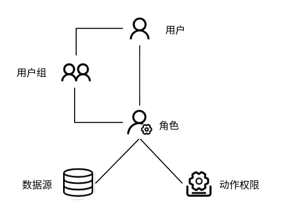

权限管理
目录
背景
目前 SQLE 的权限设计遵循如下原则：
- admin 用户是拥有最高权限的账户，可以进行任何操作；
- 普通用户对资源可进行的操作，应该受限于该用户所关联的角色的权限范围；
- 一个角色的权限由「资源」和「动作权限」两部分构成。只有当两项都不为空时，该角色才能对具体的资源对象进行实际操作；
- 普通用户所关联的角色由两部分组成，一是该用户直接绑定的角色，二是该用户所在的用户组所绑定的角色。
目前 SQLE 中的资源包括：
- 数据源
- 审核工单
- 审核任务
权限包括
- 创建/编辑工单
- 查看他人创建的工单
基于以上的描述，SQLE 实现了基于 RBAC 的权限管理系统。
